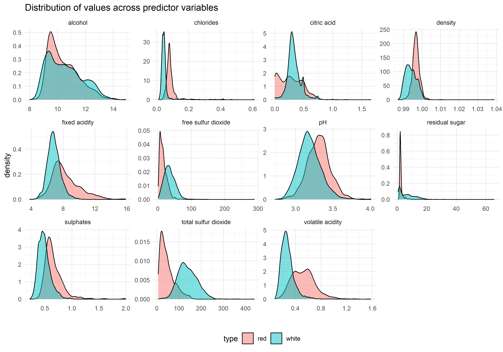
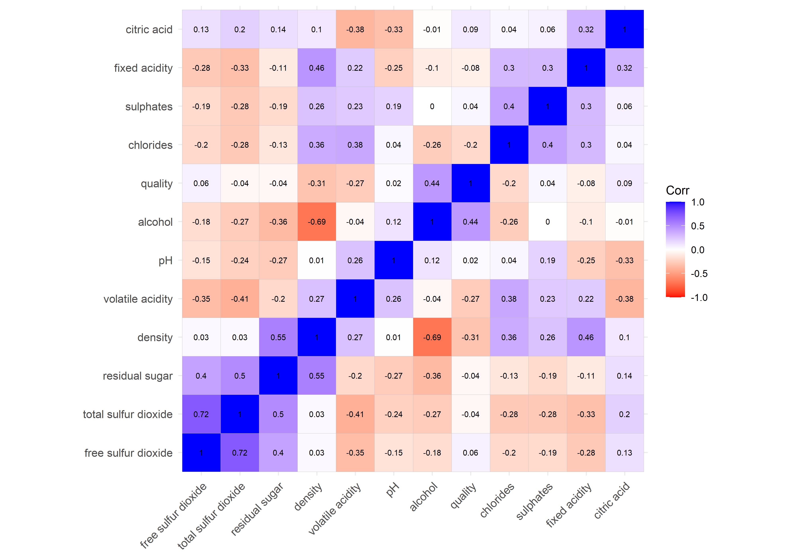
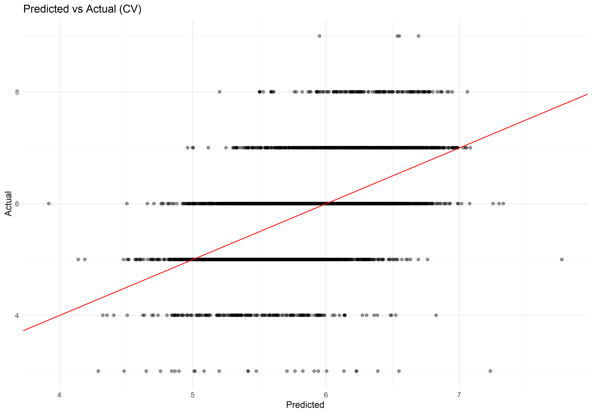
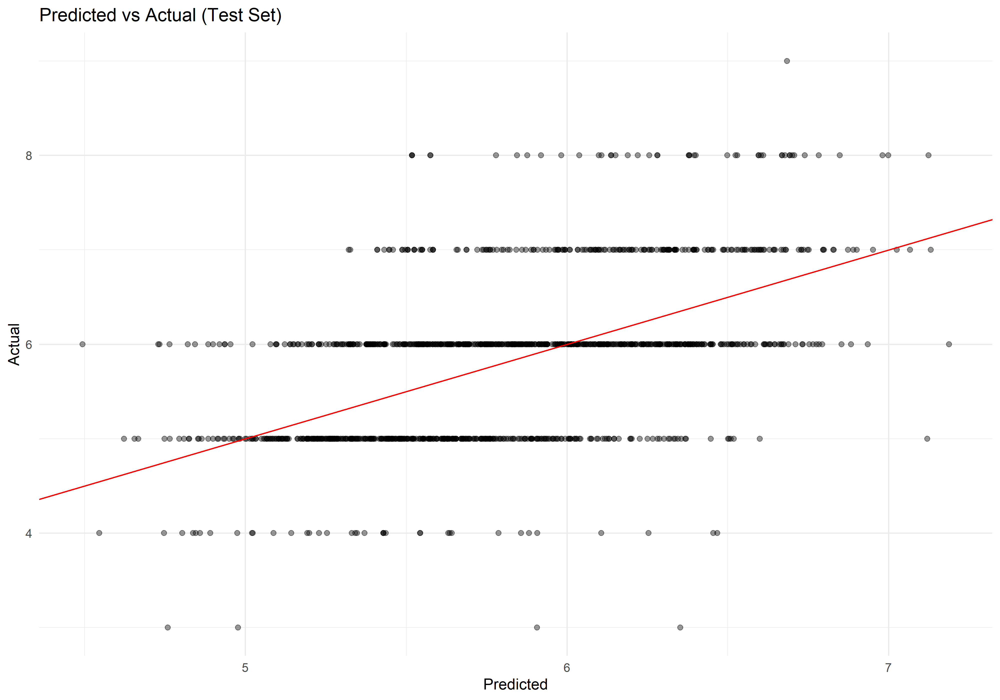
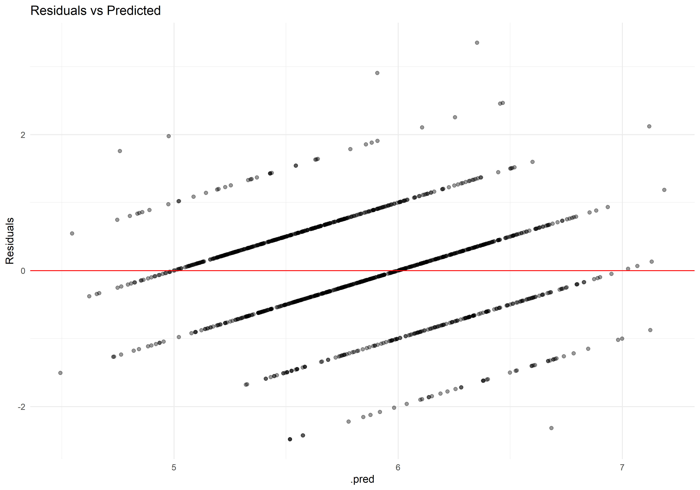
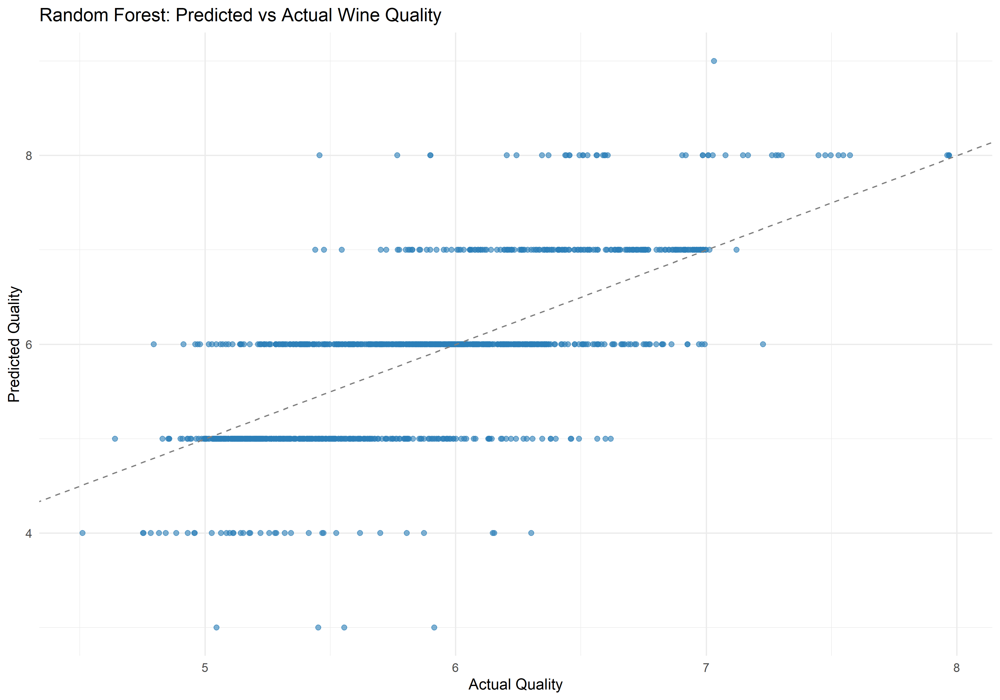

Code
knitr::opts_chunk$set(echo = TRUE,warning = FALSE,message=FALSE, dpi = 200, fig.width=10, fig.height=7)Ben Jepson
# red wine
red <- read_delim("winequality-red.csv", delim = ";") %>%
mutate(type = "red") #red wine
# white wine
white <- read_delim("winequality-white.csv", delim = ";") %>%
mutate(type = "white") #white wine
wine <- bind_rows(red, white) # easy combine datasets because same structure
rm(red)
rm(white)For this project I’m using the wine quality data from the UCI Machine Learning Repository (https://archive.ics.uci.edu/dataset/186/wine+quality)
This dataset has been used in many projects before - there are over 6000 samples of wine with 11 chemicals measured, and quality rated 0-10. I am using it because it is similar in many ways to work I have done in the food industry, combining chemical and rating data to understand a product.
Explore the dataset
Compare red vs. white wines
Build and evaluate regression and machine learning models to predict quality
Show my thought process throughout
The dataset provided from the UCI repository does not have missing values. I will explore the data for insights to get started.
| type | n | mean_quality | sd_quality | min_quality | max_quality |
|---|---|---|---|---|---|
| red | 1599 | 5.64 | 0.81 | 3 | 8 |
| white | 4898 | 5.88 | 0.89 | 3 | 9 |
I notice there are about 3 times as many white as red samples. Average quality looks similar, but the standard deviation of quality is large relative to the scale (will end up covering much of the range used). The wines only use 3-9 of the 0-10 scale.
wine %>%
pivot_longer(cols = -c(type, quality), names_to = "feature", values_to = "value") %>%
group_by(type, feature) %>%
summarize(
mean = mean(value),
sd = sd(value),
min = min(value),
max = max(value),
.groups = "drop"
) %>%
mutate(across(c(mean, sd, min, max), ~round(.x, 2))) %>%
pivot_wider(
names_from = type,
values_from = c(mean, sd, min, max),
names_glue = "{type}_{.value}"
) %>%
arrange(feature) %>%
gt(rowname_col = "feature") %>%
tab_header(
title = "Red vs. White Wine Summary",
subtitle = "Mean, SD, Min, and Max for Each Predictor"
) %>%
cols_label(
red_mean = "Red Mean", white_mean = "White Mean",
red_sd = "Red SD", white_sd = "White SD",
red_min = "Red Min", white_min = "White Min",
red_max = "Red Max", white_max = "White Max"
) %>%
tab_options(
table.font.size = "small",
data_row.padding = px(3),
heading.align = "left"
) %>%
opt_row_striping() %>%
opt_table_outline()| Red vs. White Wine Summary | ||||||||
|---|---|---|---|---|---|---|---|---|
| Mean, SD, Min, and Max for Each Predictor | ||||||||
| Red Mean | White Mean | Red SD | White SD | Red Min | White Min | Red Max | White Max | |
| alcohol | 10.42 | 10.51 | 1.07 | 1.23 | 8.40 | 8.00 | 14.90 | 14.20 |
| chlorides | 0.09 | 0.05 | 0.05 | 0.02 | 0.01 | 0.01 | 0.61 | 0.35 |
| citric acid | 0.27 | 0.33 | 0.19 | 0.12 | 0.00 | 0.00 | 1.00 | 1.66 |
| density | 1.00 | 0.99 | 0.00 | 0.00 | 0.99 | 0.99 | 1.00 | 1.04 |
| fixed acidity | 8.32 | 6.85 | 1.74 | 0.84 | 4.60 | 3.80 | 15.90 | 14.20 |
| free sulfur dioxide | 15.87 | 35.31 | 10.46 | 17.01 | 1.00 | 2.00 | 72.00 | 289.00 |
| pH | 3.31 | 3.19 | 0.15 | 0.15 | 2.74 | 2.72 | 4.01 | 3.82 |
| residual sugar | 2.54 | 6.39 | 1.41 | 5.07 | 0.90 | 0.60 | 15.50 | 65.80 |
| sulphates | 0.66 | 0.49 | 0.17 | 0.11 | 0.33 | 0.22 | 2.00 | 1.08 |
| total sulfur dioxide | 46.47 | 138.36 | 32.90 | 42.50 | 6.00 | 9.00 | 289.00 | 440.00 |
| volatile acidity | 0.53 | 0.28 | 0.18 | 0.10 | 0.12 | 0.08 | 1.58 | 1.10 |
This is a bit of an eye chart but I wanted to show a broad picture of the predictor variables. We can see right away that the variables are not on the same scale, for example chlorides range from 0.01 to 0.61, while total sulfur dioxide ranges from 6 to 440. We may have to standardize predictors. In general red and white wine seem to have similar averages for many variables, at least in the same ballpark. In further exploration and modeling we’ll assess what variables and ranges matter most.
wine %>%
pivot_longer(cols = -c(type, quality), names_to = "feature", values_to = "value") %>%
ggplot(aes(x = value, fill = type)) +
geom_density(alpha = 0.5) +
facet_wrap(~feature, scales = "free") +
theme_minimal()+
theme(legend.position = "bottom")+
labs(title = "Distribution of values across predictor variables",
x = "")
The density plots show the distribution of each predictor by wine type. I notice a few things right away, such as higher volatile acidity in red wines, and lower sulfur in red wines.

It doesn’t look like there are strong correlations between single variables and quality. Modeling will help us take all variables into consideration.
I will now use linear regression and random forest models to evaluate and compare predictive performance, and identify drivers of wine quality.
Since we identified the predictors are on different scales, I’m going to standardize them. This dataset started out pretty clean so this is the only preprocessing for now.
I want to inspect the dataset to make sure my preprocessing did what was intended.
Rows: 5,197
Columns: 13
$ `fixed acidity` <dbl> -0.23995932, 0.14670464, 2.15735721, -0.7812888…
$ `volatile acidity` <dbl> 0.118021791, 1.324827983, 2.109252007, -0.84742…
$ `citric acid` <dbl> 0.21655234, -1.55630348, -1.41992995, 0.0801788…
$ `residual sugar` <dbl> 0.668916301, -0.828454847, -0.849544581, -0.005…
$ chlorides <dbl> -0.50908264, 0.41998478, 0.78598104, -0.7906182…
$ `free sulfur dioxide` <dbl> 0.35703651, -0.64877070, -1.26343066, -0.537014…
$ `total sulfur dioxide` <dbl> 0.16738706, 0.02668318, -1.60899950, -0.7120122…
$ density <dbl> -1.02380649, 0.09038681, 0.36230303, -1.5145821…
$ pH <dbl> -1.354464579, 0.005686429, -2.096365129, 0.8712…
$ sulphates <dbl> -1.414134180, -0.009600612, -0.410895917, -0.81…
$ alcohol <dbl> 1.595089e+00, -5.876482e-01, -6.715996e-01, 2.5…
$ type <fct> white, white, red, white, white, white, white, …
$ quality <dbl> 8, 5, 5, 7, 7, 5, 6, 6, 7, 5, 6, 8, 5, 7, 5, 7,…Looks good for now.

As I expected, this doesn’t seem like a great fit - the RMSE average of 0.73 indicates the model isn’t too accurate. The standard error of 0.008 indicates it is performing consistently across the cross validation folds which is good - the model is stable between folds but overall not accurate.


The RMSE was very close for the training and test data, but overall this is not an accurate model. The residual plot shows strange patterns, this model is clearly underfitting.
Call:
stats::lm(formula = ..y ~ ., data = data)
Residuals:
Min 1Q Median 3Q Max
-3.8599 -0.4657 -0.0377 0.4633 3.0193
Coefficients:
Estimate Std. Error t value Pr(>|t|)
(Intercept) 6.06760 0.04824 125.772 < 2e-16 ***
`fixed acidity` 0.10761 0.02250 4.783 1.78e-06 ***
`volatile acidity` -0.23737 0.01499 -15.832 < 2e-16 ***
`citric acid` 0.00142 0.01304 0.109 0.913
`residual sugar` 0.27967 0.03124 8.951 < 2e-16 ***
chlorides -0.01684 0.01312 -1.284 0.199
`free sulfur dioxide` 0.09573 0.01526 6.274 3.81e-10 ***
`total sulfur dioxide` -0.08253 0.02054 -4.017 5.98e-05 ***
density -0.29351 0.04734 -6.200 6.07e-10 ***
pH 0.08327 0.01624 5.127 3.05e-07 ***
sulphates 0.09586 0.01265 7.578 4.12e-14 ***
alcohol 0.28736 0.02367 12.142 < 2e-16 ***
typewhite -0.33017 0.06277 -5.260 1.50e-07 ***
---
Signif. codes: 0 '***' 0.001 '**' 0.01 '*' 0.05 '.' 0.1 ' ' 1
Residual standard error: 0.7323 on 5184 degrees of freedom
Multiple R-squared: 0.3019, Adjusted R-squared: 0.3003
F-statistic: 186.8 on 12 and 5184 DF, p-value: < 2.2e-16Most variables are statistically significant, as is the model itself. I want to point this out and emphasize it, because the “significance” doesn’t mean we have a useful model. The model doesn’t predict very well.
In the future I might try this with interactions with type - the predictor variable impact might very well depend on the type of wine. Or maybe it’s better to fit a model separately for red and white wines.
Linear regression probably isn’t the best choice for the quality rating. We could treat the rating as a categoric variable and do ordinal (multilevel) logistic regression. This is an approach I’ve taken in some projects. For this project I’ll use a random forest model and compare.
It’s worth noting that the quality rating really is a categoric scale, I’ve been treating it as a continuous number in this project. My reason for doing this, is that this is very often done in industry. I might not agree with it but it’s common. We’ll take the categoric approach in a separate project.
For the quality rating, a random forest model will probably perform better than linear regression.
The data is already split into test and train.
(And as a note, I’d use workflowsets if I was doing more of this, to test many models and compare at scale)
I also realized my naming was not the clearest, rather than go back and edit the linear model section, going forward I’m going to denote random forest with _rf.
No preprocessing needed for random forest.
# A tibble: 2 × 6
.metric .estimator mean n std_err .config
<chr> <chr> <dbl> <int> <dbl> <chr>
1 rmse standard 0.625 5 0.00664 Preprocessor1_Model1
2 rsq standard 0.498 5 0.0104 Preprocessor1_Model1I notice the RMSE is lower than with linear regression, the standard error is also lower, and r squared is higher.
# A tibble: 3 × 3
.metric .estimator .estimate
<chr> <chr> <dbl>
1 rmse standard 0.596
2 rsq standard 0.529
3 mae standard 0.436Similar performace to the training data.
ggplot(preds_rf, aes(x = .pred, y = quality)) +
geom_point(alpha = 0.6, color = "#2c7fb8") +
geom_abline(slope = 1, intercept = 0, linetype = "dashed", color = "gray50") +
labs(
title = "Random Forest: Predicted vs Actual Wine Quality",
x = "Actual Quality",
y = "Predicted Quality"
) +
theme_minimal()
The random forest model (with default hyperparameters) resulted in a more accurate model with lower RMSE, however we can see here that there is still a lot of variation in the results.
I didn’t do any hyperparameter tuning, we might be able to get better predictive performance with tuning. Regression might not be the right approach, since the response (quality) is a rating, it really is a categoric scale. I might try ordinal logicstic regression instead.
It is possible that the predictors might never give more accurate predictions too. There might be many more variables needed, different variables needed that aren’t captured here. For example this dataset considered chemical measurements, but if I was doing consumer research I would want to know demographic and purchase behavior of the tasters. If we could segment the consumers we might find the people who really like (or dislike) certain attributes of wines.
It’s also possible that predictions will never be much better, at some point there will be natural variation between product and consumer, and we won’t know how they will respond. Sometimes the answer we want doesn’t exist! (I am not concluding that yet, this was a simple exploratory project, there is much more to work on)